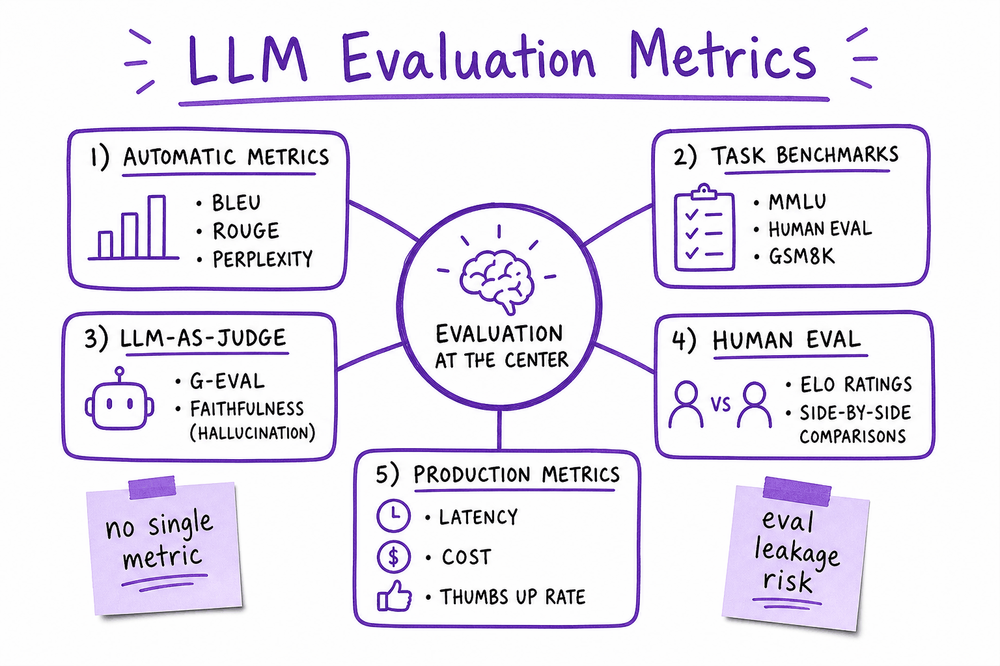
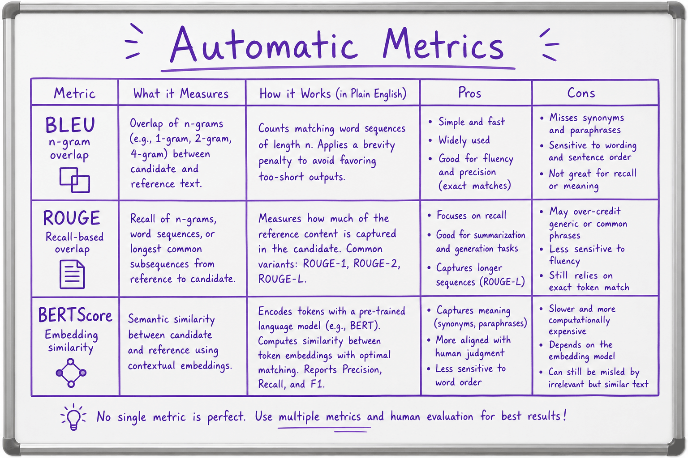
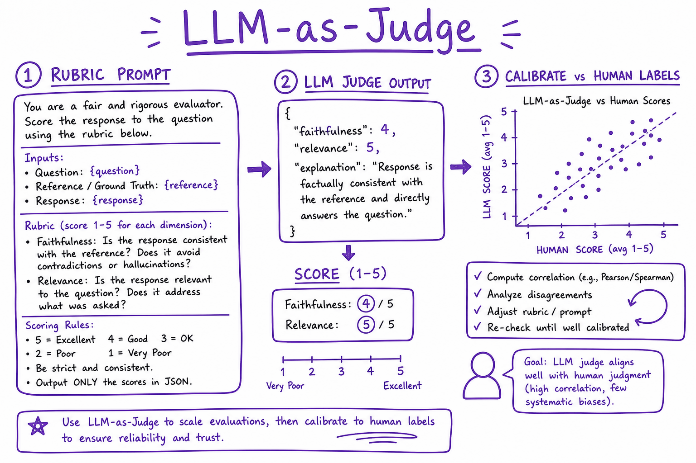
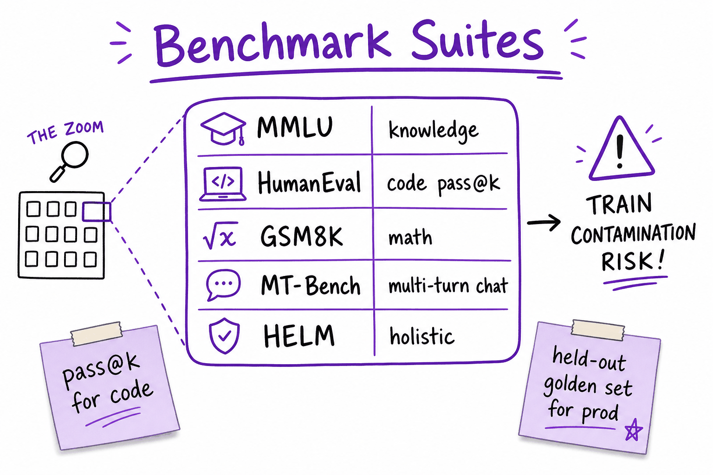
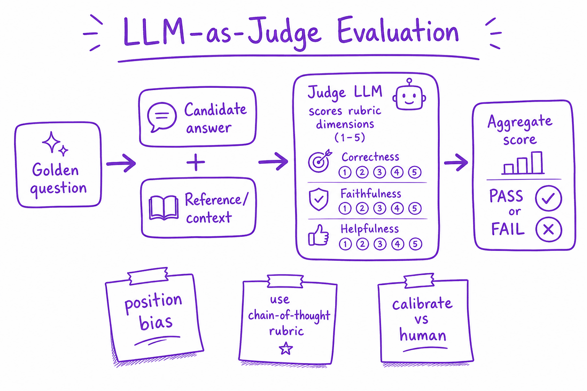

Evaluation metrics // Production & evals
Perplexity, BLEU/ROUGE, benchmarks, LLM-as-judge and human evaluation: what each measures.
01 — At a glance
Automatic metrics, benchmark suites, LLM-as-judge, human eval, and production KPIs for measuring LLM quality without fooling yourself with leaky benchmarks.

Evaluation spans automatic scores, public benchmarks, LLM judges, human side-by-side, and live production metrics — no single number captures chat quality.

BLEU, ROUGE and BERTScore side by side: what each measures, how it works, and where it misleads.

LLM-as-judge: a rubric prompt, a structured score, and calibration against human labels before you trust it.
02 — New words
| Word | Meaning |
|---|---|
| Reference answer | A human-written "correct" output that a model's output is compared against. |
| Perplexity | How surprised a model is by a text: the exponential of the average negative log-probability per token. Lower means the model predicted the text better. |
| Bits per byte | Total negative log-probability of a text, in bits, divided by its length in bytes. Like perplexity, but comparable across tokenizers. |
| n-gram | A run of \(n\) consecutive words (or tokens): "opened audio" is a 2-gram. |
| BLEU | A precision-based overlap score: what fraction of the output's n-grams appear in the reference, with a penalty for outputs that are too short. |
| ROUGE | A recall-oriented overlap score: how much of the reference appears in the output. ROUGE-L uses the longest common subsequence. |
| Exact match / token F1 | Short-answer metrics: whether the normalised output equals the reference, and the word-overlap F1 between them. |
| pass@k | For code: the probability that at least one of \(k\) sampled programs passes the tests. |
| Benchmark | A fixed public test set with a scoring rule (multiple-choice exams, coding problems, maths problems), used to compare models. |
| Contamination | Test questions (or their answers) having appeared in a model's training data, which inflates its score. |
| LLM-as-judge | Using a strong model, with a rubric, to grade or compare outputs in place of a human. |
| Win rate / Elo | From pairwise comparisons: the fraction of matchups a model wins, and a rating scale derived from those wins. |
| Cohen's kappa | Agreement between two raters, corrected for the agreement they would reach by chance. |
Quick reference
03 — What & Why
LLM output is high-dimensional. You need task-specific metrics, held-out golden sets, and human calibration. Wrong metrics optimize for benchmarks, not users.
Production eval harness: Evaluating LLM features.
04 — Core Concepts
| Term | Definition | Gotcha |
|---|---|---|
| Perplexity | exp(avg NLL); LM quality | Weak post-RLHF chat signal |
| BLEU/ROUGE | N-gram overlap | Poor for paraphrase |
| pass@k | Code: any of k samples passes tests | HumanEval standard |
| LLM-as-judge | Strong model scores weak model | Position bias |
| Faithfulness | Answer supported by context | Critical for RAG |
| Eval leakage | Benchmark in training data | Inflated scores |
05 — API Surface
# ragas faithfulness example
from ragas.metrics import faithfulness
# score = faithfulness(question, answer, contexts)
# OpenAI judge
judge_prompt = """Rate faithfulness 1-5. Context: {ctx}\nAnswer: {ans}"""06 — When to Use / When NOT
| Metric | Use | Skip |
|---|---|---|
| BLEU/ROUGE | Summarization baseline | Open-ended chat |
| LLM judge | Scale + rubrics | High-stakes without human cal |
| MMLU | Knowledge probe | Product-specific tasks |
| Human ELO | Model selection | Daily CI (too slow) |
07 — Architecture
Golden set -> {Automatic, Benchmark, LLM-judge, Human} -> Dashboard
-> CI gate (block if faithfulness drops >2%)
-> Production: thumbs, escalation rate, latency08 — Deep Dive: Automatic Metrics
Exact match for classification. JSON schema validation for structured output. Embedding cosine for semantic similarity. Cheap but shallow for open text.
09 — Deep Dive: Benchmark Suites

MMLU, HumanEval, GSM8K, MT-Bench — public probes with contamination risk.
MMLU: multi-domain MCQ. HumanEval: Python pass@k. GSM8K: grade-school math. Use as directional, not sole KPI.
10 — Deep Dive: LLM-as-Judge

Judge model scores candidate answers on rubric dimensions with chain-of-thought reasoning.
G-Eval style: rubric + CoT before score. Mitigate position bias by swapping A/B order. Calibrate against human labels monthly.
11 — Deep Dive: Human Evaluation
Humans are the ground truth every automatic metric and LLM judge is calibrated against.
- Pairwise preference: show two outputs side by side, ask which is better. More reliable than absolute scores; aggregate into an Elo or win rate.
- Rubrics: task-specific criteria (correct, complete, grounded, tone) scored on a short scale, with written guidelines and examples of each score.
- Sample size: 50 to 200 prompts for a model comparison; report confidence intervals, not a single number.
- Agreement: have two raters label an overlap set and measure agreement (Cohen's kappa). Low agreement means the rubric is unclear, not that raters are bad.
Expensive and slow, so use it to calibrate judges and to decide releases, not on every commit.
The full explanation
12 — The question
"How good is this model?" has no single answer, because "good" means different things: predicting text well, matching a known answer, being judged helpful by people, beating another model. Each evaluation metric answers one of these narrower questions, and each has a precise mechanism that decides what it can and cannot see. Knowing the mechanism is what lets you pick metrics that track what your product needs, and spot a metric that is lying.
Interviewers ask:
- What does perplexity measure, and why is it not a measure of answer quality?
- How do BLEU and ROUGE work, and why do they fail for chat and RAG answers?
- How should you read a benchmark score or a leaderboard rating?
- When are LLM judges and human ratings trustworthy, and how do you check?
Running example: the electronics shop's help-centre assistant (built in LangChain). For the question "Can I return opened headphones after 20 days?" the reference answer is:
Reference: "yes opened audio products can be returned within 30 days if undamaged"
and we will score three candidate answers with every metric:
| Candidate | Text | Actually correct? |
|---|---|---|
| Paraphrase | "yes you have 30 days to send back opened headphones as long as they are not damaged" | Yes |
| Negated | "no opened audio products cannot be returned within 30 days if undamaged" | No: the opposite |
| Truncated | "yes opened audio products can be returned within 30 days" | Yes, missing the condition |
(Lower-cased, punctuation removed, split on spaces, as overlap metrics usually do.) This page is about what each metric measures. How to build an evaluation process around them (golden sets, grader design, statistics, CI) is in Evaluating LLM features.
13 — Step 1: four kinds of evaluation question
Sort metrics by the question they answer:
- Intrinsic: how well does the model predict text? (Perplexity.) Needs no task, only text.
- Reference-based: how close is the output to a known answer? (Exact match, F1, BLEU, ROUGE, embedding similarity, tests for code.) Needs a reference per input.
- Reference-free: is this output good, judged directly? (Human ratings, LLM judges with a rubric.) Needs a judge, not a reference.
- Comparative: is model A better than model B? (Pairwise preferences, win rates, Elo-style ratings.) Needs two outputs and a judge.
The further down the list, the closer the metric gets to "would a user be satisfied", and the more expensive and noisy it becomes. A sound evaluation usually combines a cheap automatic metric that runs on everything with an expensive judged metric on a sample.
14 — Step 2: perplexity
A language model assigns a probability to each next token. For a text of \(T\) tokens, the average negative log-probability is the cross-entropy, and perplexity is its exponential:
\[ \text{PPL} = \exp\Big(-\frac{1}{T}\sum_{t=1}^{T} \log p(w_t \mid w_{<t})\Big) \]Worked: a model gives the six tokens of a short answer probabilities 0.6, 0.3, 0.9, 0.5, 0.8 and 0.7. The average negative log-probability is 0.516 nats, so perplexity is \(e^{0.516} \approx 1.67\): on average the model was about as uncertain as choosing among 1.67 equally likely tokens. A perplexity of 1 would mean certainty about every token.
Perplexity is the training objective made readable, which makes it the right metric for pretraining and for comparing checkpoints of the same model on the same held-out text. It has three limits:
- It measures prediction, not usefulness. A model can assign high probability to the reference answer and still, when sampling, produce something else; and chat tuning often raises perplexity on plain web text while making the model far more useful.
- It depends on the tokenizer. Model A splits a 60-byte text into 15 tokens with total negative log-probability 30 nats (perplexity \(e^{2} = 7.39\)). Model B uses 20 tokens and 32 nats (perplexity \(e^{1.6} = 4.95\)). B has lower perplexity but predicts the text worse: it spends more total surprise. Per byte, A is 0.72 bits and B 0.77. Compare models with different tokenizers in bits per byte.
- Closed models often do not expose it. You need token log-probabilities for the whole text.
15 — Step 3: exact match and token F1
For short factual answers (a date, a name, yes or no), the simplest metrics are the strongest. Exact match is 1 if the output equals the reference after normalisation (lower-case, strip punctuation and articles), else 0. Token F1 treats each as a bag of words: precision is the fraction of output words found in the reference, recall the fraction of reference words found in the output, and F1 their harmonic mean.
On our candidates, none is an exact match, and token F1 gives the paraphrase 0.28, the negated answer 0.83 and the truncated answer 0.91. The wrong answer scores three times higher than a correct one, because it reuses the reference's words and swaps just two small ones ("yes" for "no", "can" for "cannot"), which flips its meaning. That pattern, high overlap with opposite meaning, is the central weakness of every overlap metric that follows.
The fix for short answers is to make the answer short: ask the model for a structured field ({"returnable": true, "window_days": 30}) and compare fields exactly. Exact match on a field is a far better metric than F1 on a sentence.
16 — Step 4: BLEU, precision of n-grams
BLEU was designed for machine translation. For each \(n\) from 1 up to 4 it computes a clipped n-gram precision: the fraction of the output's n-grams that appear in the reference, where each reference n-gram can be matched at most as many times as it occurs (so repeating "the the the" earns nothing). It combines them with a geometric mean and multiplies by a brevity penalty, because precision alone rewards very short outputs:
\[ \text{BLEU} = \text{BP} \cdot \exp\Big(\frac{1}{N}\sum_{n=1}^{N} \log p_n\Big), \qquad \text{BP} = \begin{cases} 1 & c > r \\ e^{1 - r/c} & c \le r \end{cases} \]where \(p_n\) is the clipped \(n\)-gram precision, \(c\) the output length and \(r\) the reference length. With \(N = 2\) (BLEU-2, to keep the arithmetic readable):
| Candidate | \(p_1\) | \(p_2\) | BP | BLEU-2 |
|---|---|---|---|---|
| Paraphrase (correct) | 0.24 | 0.06 | 1 | 0.12 |
| Negated (wrong) | 0.83 | 0.73 | 1 | 0.78 |
| Truncated (correct) | 1.00 | 1.00 | \(e^{1 - 12/10} = 0.82\) | 0.82 |
The truncated answer has perfect precision; only the brevity penalty stops it scoring 1. The paraphrase shares almost no 2-grams with the reference and scores 0.12. The opposite answer scores 0.78.
BLEU works tolerably for its original setting: translation, scored over a whole test corpus rather than one sentence, ideally against several reference translations, where a correct output must reuse most of the reference's words. For open-ended generation there are many correct phrasings, so overlap with one reference mostly measures phrasing, not correctness. At the sentence level with \(N = 4\), any output without a matching 4-gram scores exactly 0 unless smoothing is added, another sign it was not designed for this use.
17 — Step 5: ROUGE, recall of the reference
ROUGE was designed for summarisation, where the worry is missing content, so it emphasises recall: how much of the reference appears in the output. ROUGE-1 and ROUGE-2 count overlapping 1-grams and 2-grams. ROUGE-L uses the longest common subsequence (LCS): the longest sequence of words appearing in both texts in the same order, not necessarily adjacent. It rewards preserved word order without requiring exact phrases. The usual reported figure is an F-measure of LCS-based precision and recall.
ROUGE-L F on our candidates: paraphrase 0.21, negated 0.83, truncated 0.91. Same story: the LCS of the negated answer and the reference is ten words long, missing only "yes" and "can"; the two words it puts in their place reverse the meaning, and ROUGE cannot tell.
Both BLEU and ROUGE are fast, cheap, deterministic and reproducible, which is why they persist. Use them as regression alarms on tasks where wording should be stable (template-like summaries, translation of UI strings), never as the main quality metric for chat or RAG.
18 — Step 6: meaning-based similarity
The obvious repair is to compare meanings instead of words:
- Embedding similarity: embed output and reference with a sentence embedding model and take the cosine similarity. The paraphrase scores much higher than under BLEU. But embeddings capture topic more than logic, and "can be returned" and "cannot be returned" often sit close together, so negation is still poorly handled. See Embeddings.
- BERTScore: match each token of the output to its most similar token in the reference using contextual embeddings, and average. More robust to paraphrase than n-grams; same blind spot for small logical changes.
- Entailment (NLI) checks: a natural-language-inference model judges whether the output is entailed by, neutral to, or contradicts the reference. This is the first method here that directly targets "does the answer say the same thing", and it flags the negated candidate as a contradiction. It is also the basis of many faithfulness checks for RAG (is each claim supported by the retrieved text?).
The trend is clear: as metrics move from surface form to meaning, they need a model to compute them, and the next step is to ask a capable model to judge directly.
19 — Step 7: metrics shaped like the task
Often the best metric is not a text metric at all, because the output has a checkable structure:
- Extraction and classification: per-field precision, recall and F1, and a confusion matrix per class. A ticket-triage model is measured on whether
categoryis right, not on how its JSON is worded. See Fine-tuning. - Code: run the tests. pass@k is the probability that at least one of \(k\) samples passes. Estimate it by drawing \(n \ge k\) samples, counting the \(c\) that pass, and computing \(1 - \binom{n-c}{k} / \binom{n}{k}\), the chance that a random subset of \(k\) contains at least one passing sample. With \(n = 10\) and \(c = 3\): pass@1 = 0.30 and pass@5 = \(1 - \binom{7}{5}/\binom{10}{5} = 1 - 21/252 \approx 0.92\). Using this unbiased estimator matters: simply taking the best of the first \(k\) samples from one run is a much noisier estimate.
- Retrieval: recall@k, MRR and nDCG measure whether the right documents were retrieved and ranked high, separately from whether the answer was good. See RAG in production.
- Format: valid-JSON rate, schema-conformance rate, refusal rate. Trivial to compute, and frequent causes of production incidents.
20 — Step 8: benchmarks and how to read them
A benchmark is a fixed test set plus a scoring rule. Multiple-choice knowledge exams are scored either by comparing the model's log-probabilities of the options or by letting it generate an answer letter; the two methods can give noticeably different scores for the same model, as can the prompt format and the number of examples in the prompt. When comparing scores, check they were produced the same way.
Three more things to check before trusting a number:
- Sampling error. On a 1,000-question benchmark, a 70% score has a 95% interval of about ±2.8 points. A 1-point lead is noise.
- Contamination. If test items leaked into training data, scores overstate ability. Signs: much better performance on older items than on newer, equivalent ones, or the model completing questions verbatim.
- Saturation and relevance. When top models all score near the ceiling, the benchmark no longer separates them. And a general benchmark says little about your task: a model's exam score does not predict how it handles the shop's return policy.
Use public benchmarks to build a shortlist. Make the final choice on your own evaluation set.
21 — Step 9: LLM-as-judge
A judge model reads the question, the answer, often the reference or retrieved context, and a rubric, and returns a grade. Two forms:
- Pointwise: score one answer against a rubric ("Is the return window correct? Is the condition stated? Is it grounded in the context?"). Works best as several binary checks rather than one 1-to-10 score, because binary questions are more consistent.
- Pairwise: which of two answers is better? Matches how people judge, and is the basis of win rates.
Given the reference, a capable judge easily marks the negated answer wrong and both others right (noting the missing "if undamaged" in the truncated one). That is why judges have largely replaced overlap metrics for open-ended output. Their known biases: position (favouring the first or second answer), verbosity (favouring longer answers), self-preference (favouring outputs in their own style), and inconsistency on genuinely close calls. A judge is a model you must evaluate: label 100 to 200 examples by hand and measure the judge's agreement with you before trusting it. The full procedure is in Evaluating LLM features.
22 — Step 10: win rates and ratings
Pairwise comparisons produce a win rate: the fraction of comparisons model A wins against model B (ties counted as half, or reported separately). Many comparisons across many models can be summarised with a Bradley–Terry or Elo-style rating, where the difference in ratings predicts the win probability. Under Bradley–Terry, a 60% win rate corresponds to a strength difference of \(\ln(0.6/0.4) \approx 0.41\); on the Elo scale (400 points per factor of 10 in odds), that is \(400 \log_{10}(1.5) \approx 70\) points.
So a 70-point lead means "wins 60% of head-to-head comparisons on this prompt mix with these judges", not "60% more accurate" or "better at everything". Crowd-sourced arena ratings reflect the prompts people chose to try and the preferences of those voting, including the usual pull toward longer, more confident, nicely formatted answers. Like benchmarks, they are good for shortlisting.
23 — Step 11: human evaluation and its noise
Human judgement is the reference standard, but it is noisy too, so measure the raters before trusting the ratings. Have two raters label the same sample and compute Cohen's kappa:
\[ \kappa = \frac{p_o - p_e}{1 - p_e} \]where \(p_o\) is the observed agreement and \(p_e\) the agreement expected by chance given each rater's label frequencies. Worked: two raters mark 200 answers correct or incorrect and agree on 170 (\(p_o = 0.85\)). Rater 1 marks 120 correct, rater 2 marks 130. Chance agreement is \(0.6 \times 0.65 + 0.4 \times 0.35 = 0.53\), so \(\kappa = (0.85 - 0.53)/(1 - 0.53) \approx 0.68\): substantial agreement, but well short of perfect. Raw 85% agreement looked better than it is because both raters mark most answers correct.
Low agreement means the guidelines are ambiguous; fix them before collecting more labels. Agreement between your raters also sets the ceiling for any automatic judge: a judge cannot be validated more precisely than the humans it is compared with.
24 — Choosing metrics for the help-centre assistant
| What to know | Metric | Why this one |
|---|---|---|
| Did retrieval find the right policy? | Recall@6 on a labelled question set | Separates retrieval failures from generation failures |
| Is the answer correct? | LLM judge with the reference and binary rubric checks, validated against human labels | Handles paraphrase and catches negation; overlap metrics do neither |
| Is it grounded? | Entailment or judge check of each claim against retrieved text | Targets hallucination specifically |
| Did the format break? | Citation-present rate, length, refusal rate | Cheap, runs on all traffic |
| Is version 2 better than version 1? | Pairwise win rate on the same questions, both orders | Matches the decision being made |
| Which base model to try? | Public benchmarks, then your own set | Shortlist cheaply, decide on your data |
Not on the list: BLEU, ROUGE and perplexity. Each measures something real, and none of those things is what the shop needs to know about its answers.
25 — In code: every metric on the running example
import math from collections import Counter from math import comb ref = "yes opened audio products can be returned within 30 days if undamaged".split() cands = { "paraphrase (correct)": "yes you have 30 days to send back opened headphones as long as they are not damaged".split(), "negated (wrong)": "no opened audio products cannot be returned within 30 days if undamaged".split(), "truncated (correct)": "yes opened audio products can be returned within 30 days".split(), } def ngrams(toks, n): return Counter(tuple(toks[i:i + n]) for i in range(len(toks) - n + 1)) def bleu(c, r, max_n=2): """Sentence BLEU up to max_n-grams: clipped n-gram precisions, geometric mean, brevity penalty.""" precs = [] for n in range(1, max_n + 1): cn, rn = ngrams(c, n), ngrams(r, n) overlap = sum(min(k, rn[g]) for g, k in cn.items()) precs.append(overlap / max(sum(cn.values()), 1)) if min(precs) == 0: return 0.0, precs bp = 1.0 if len(c) > len(r) else math.exp(1 - len(r) / len(c)) return bp * math.exp(sum(math.log(p) for p in precs) / max_n), precs def lcs(a, b): t = [[0] * (len(b) + 1) for _ in range(len(a) + 1)] for i in range(len(a)): for j in range(len(b)): t[i + 1][j + 1] = t[i][j] + 1 if a[i] == b[j] else max(t[i][j + 1], t[i + 1][j]) return t[-1][-1] def rouge_l(c, r): l = lcs(c, r); p, rec = l / len(c), l / len(r) return 0 if l == 0 else 2 * p * rec / (p + rec) def token_f1(c, r): common = sum((Counter(c) & Counter(r)).values()) if common == 0: return 0.0 p, rec = common / len(c), common / len(r) return 2 * p * rec / (p + rec) for name, c in cands.items(): b, precs = bleu(c, ref) print(f"{name:22s} BLEU-2 {b:.2f} (p1 {precs[0]:.2f}, p2 {precs[1]:.2f}) " f"ROUGE-L {rouge_l(c, ref):.2f} token-F1 {token_f1(c, ref):.2f} exact {c == ref}") probs = [0.6, 0.3, 0.9, 0.5, 0.8, 0.7] # perplexity print("perplexity:", round(math.exp(-sum(map(math.log, probs)) / len(probs)), 2)) print("bits/byte A vs B:", round(30 / math.log(2) / 60, 2), round(32 / math.log(2) / 60, 2)) pass_at_k = lambda n, c, k: 1 - comb(n - c, k) / comb(n, k) # unbiased pass@k print("pass@1, pass@5:", round(pass_at_k(10, 3, 1), 2), round(pass_at_k(10, 3, 5), 2)) print("Elo gap for 60% wins:", round(400 * math.log10(0.6 / 0.4))) po, pe = 170 / 200, (120 / 200) * (130 / 200) + (80 / 200) * (70 / 200) print("Cohen's kappa:", round((po - pe) / (1 - pe), 2))
It prints the BLEU-2, ROUGE-L and token-F1 rows from Steps 3 to 5 (paraphrase 0.12, 0.21, 0.28; negated 0.78, 0.83, 0.83; truncated 0.82, 0.91, 0.91; no exact matches), then perplexity 1.67, bits per byte 0.72 and 0.77, pass@1 0.3 and pass@5 0.92, an Elo gap of 70 and a kappa of 0.68.
In production
26 — Deep Dive: Production Metrics
- User thumbs up/down rate
- Escalation to human support
- Faithfulness on sampled RAG traces
- Hallucination report rate
27 — Production & Ops
- Nightly eval on golden set in CI
- Alert on score regression >2%
- Store prompt/response for audit
- A/B new prompt versions
29 — Where people get lost
- Optimizing BLEU for chat
- Benchmark contamination in SFT data
- Judge model same as candidate
- No held-out golden set
- Single metric dashboards
- "Lower perplexity means a better assistant." It means better next-token prediction on that text. Chat tuning can raise perplexity while making the model far more useful.
- Comparing perplexity across tokenizers. Fewer, larger tokens change the per-token average. Use bits per byte.
- Using BLEU or ROUGE for chat and RAG. They reward reused wording: a correct paraphrase scores 0.12 and the opposite answer 0.78 on our example.
- Trusting embedding similarity to catch errors. "Can" and "cannot be returned" are close in embedding space. Use entailment or a judge for correctness.
- Reading a 1-point benchmark lead as real. On 1,000 questions the interval is about ±2.8 points; check evaluation settings and contamination too.
- Treating an Elo gap as accuracy. 70 points means winning 60% of comparisons on that prompt mix, with those judges' preferences.
- Using an unvalidated judge. Measure its agreement with human labels first, and control for position and length bias.
- Reporting raw agreement between raters. When most labels are "correct", chance agreement is high; report kappa.
30 — How this connects
Builds on
- How LLMs are trained — Pretraining, instruction tuning, chat templates, reasoning models, evaluating LLMs, and prompting vs RAG vs fine-tuning.
- Limits & hallucination — What LLMs get wrong by design, grounding and abstention, and how to design around it.
- Prompting techniques — Zero- and few-shot, chain of thought, decomposition, self-critique, injection defence.
- Embeddings — Turning meaning into numbers: dense vectors, cosine similarity, sentence embeddings and contrastive training.
- The RAG pipeline — Retrieve, augment, generate: every stage from a question to a grounded, cited answer.
- Making RAG good & measuring it — Advanced RAG, a production RAG chatbot design, retrieval and answer metrics, freshness, ACLs, latency, injection.
Where this shows up later
- Evaluating LLM features — Golden sets, graders, LLM-as-judge done properly, statistics, an eval harness in CI, online evaluation and error analysis.
- Security & guardrails — How agents expand the attack surface, input and output guardrails, and the defences that hold.
- Complete build: prove it, serve it, afford it — Evals, serving, cost and operations for the build.